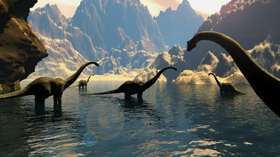

Nom : Tyrannosaure rex, Roi des reptiles tyrans.
Taille :14 mètres de long et 5,6 mètres de haut.
Nourriture : De la viande surtout celle des autres dinosaures.
Epoque : De 67 millions d'années jusqu'au Crétacé.
L'ère des dinosaures

Les dinosaures apparaissent au Trias supérieur, il y a 230 millions d'années et ils disparaissent à la fin du Crétacé, il y a 65 millions d'années. Les dinosaures dominaient leur monde... Lire la suite